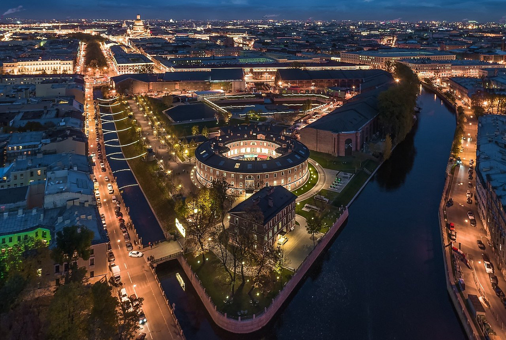
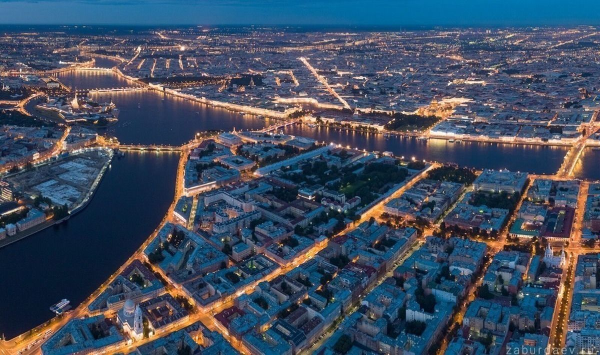
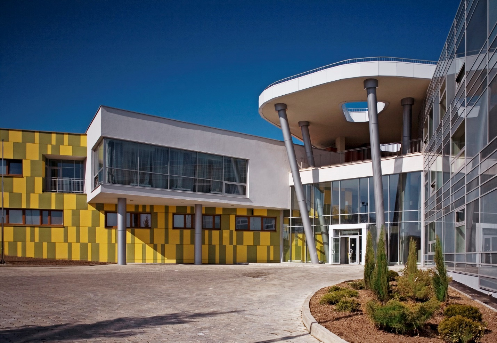
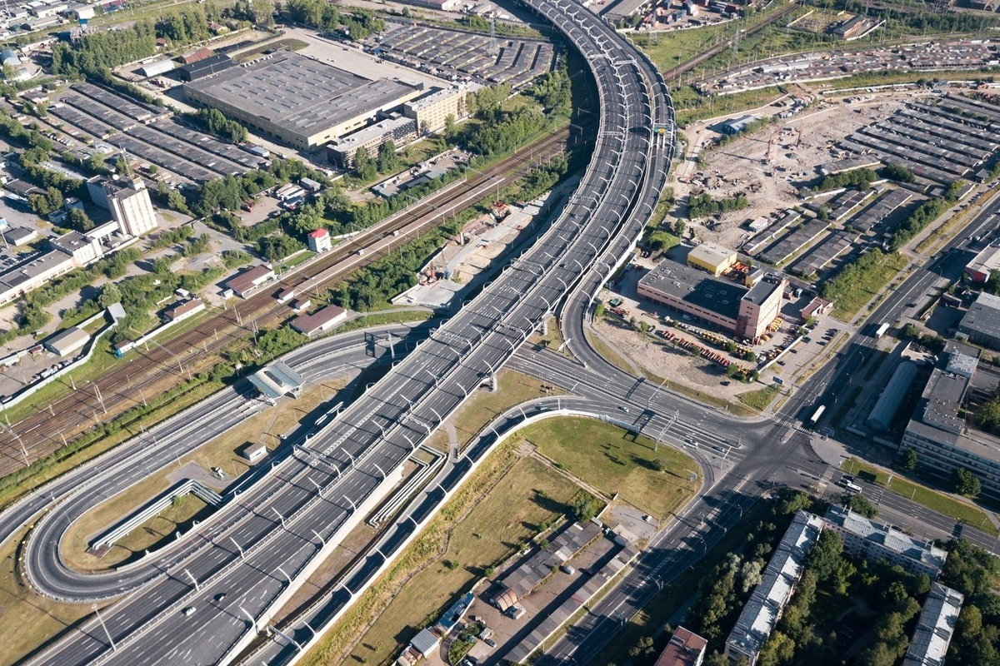

Развитие территории острова «Новая Голландия»
Реставрация и восстановление памятника архитектуры. Создание открытого публичного пространства, которое
станет ярким культурным центром города, визитной карточкой для интеллектуальных и творческих групп со
всего мира.
В результате приспособления объекта культурного наследия для современного использования в центре
Санкт‑Петербурга будет создан общественно-деловой многофункциональный комплекс с выставочными площадями и
объектами инженерной инфраструктуры.
2010-2025
(5 очередей) срок реализации проекта
12,1 млрд
объем инвестиций

Твой бюджет
«Твой бюджет» – проект для петербуржцев, который дает возможность жителям города распределить часть бюджетных средств в своем районе — на те объекты, инициативы и направления, которые они считают приоритетными.
Что сделано:
Популяризация раздельного сбора отходов, благоустройство скверов и общественных территорий, создание креативных пространств, велодорожки, велопарковки у станций метро, инклюзивные детские площадки, новая транспортная навигация, пункт обогрева и душевая для бездомных.
410 млн
распределено жителями города
53
реализованные инициативы
Развитие систем наружного освещения Санкт‑Петербурга
Цель программы: повышение качества жизни горожан и улучшение качества городской среды, создание условий для обеспечения личной безопасности и защиты имущества жителей.
Результат: нормативное функционирование установок уличного освещения, развитие, модернизация и реконструкция существующей системы уличного освещения, повышение энергетической эффективности в системе уличного освещения, улучшение архитектурно-художественной световой среды Санкт‑Петербурга в вечернее и ночное время.
200 000
энергоэффективных светильников
125
улиц, кварталов, скверов и парков
1500
детских и спортивных площадок

Современная школа
Цель проекта — обеспечение получения качественного общего образования в условиях, отвечающих современным требованиям, независимо от места проживания ребенка, организации комплексного психолого-педагогического сопровождения участников образовательных отношений, а также обеспечение возможности профессионального развития педагогических работников.
Региональный проект обеспечивает достижение целей и результатов федерального проекта, входящего в состав национального проекта «Образование», и направлен на вхождение Российской Федерации в число 10 ведущих стран мира по качеству общего образования.
13 135
новых мест в общеобразовательных организациях
22 538
детям с ОВЗ созданы условия для обучения по адаптированным общеобразовательным программам
6 816
работников прошли курсы по повышению квалификации

Строительство Широтной магистрали скоростного движения (ШМСД)
Широтная магистраль скоростного движения - масштабный инвестиционный проект Петербурга.
Магистраль станет для Петербурга вторым опытом реализации подобного проекта ГЧП на транспорте после Западного скоростного диаметра и ключевым звеном транспортного каркаса города.
Строительство ШМСД снизит нагрузку на улично-дорожную сеть города и перераспределит трафик, идущий через центр города.
Магистраль пройдет от ЗСД по южной планировочной зоне города, пересечет Неву рядом с железнодорожным мостом и Кольцевую автодорогу с выходом в Ленинградскую область.
Первым этапом создания ШМСД станет транспортная развязка, соединяющая ЗСД и Витебский проспект. Дополнительное соглашение о строительстве развязки подписано 18 ноября 2020 года.
160 млрд
планируемый объем инвестиций
27,4 км
общая протяженность
39 млрд
общий объем инвестиций на 1 этап (Витебская развязка)
4 года
срок создания (с момента подписания соглашения)
